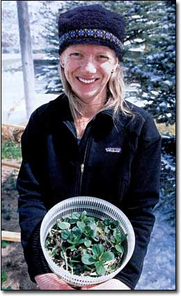
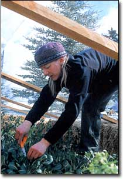
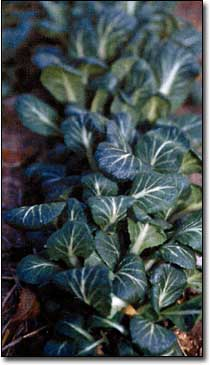

In the following story, Clara Coleman reports on her first experience using a low-tech method developed by her father, Eliot Coleman, for growing salad greens in wintertime. In a companion piece beginning on Page 26, Eliot outlines the evolution of his method, now being adopted by gardeners and farmers throughout North America. - MOTHER
On a cold and rainy mid-September day last year, I planted tiny seeds in a patch of muddy earth and embarked on a seemingly contradictory journey of winter gardening in the Rocky Mountains, in Woody Creek, Colorado. Crouched over my new garden - a 6-by-24-foot raised bed surrounded by 24 bales of musty hay, I felt skeptical that it would succeed, despite reassurances from my father, Eliot Coleman. A long-time proponent of winter food production, he assured me that my winter garden would not only work but would amaze me with the simplicity of its care and the perseverance of its plants.
"The simpler, the better," he always says, so I used spoiled bales from a nearby horse farm, perfect for making a well-insulated base, and a few old 2-by-4's to set across the top. Dad furnished a 20-by-30-foot sheet of still-usable greenhouse plastic sheeting, and that took care of my materials.
Even though the mid-September planting date seemed a little late for some varieties, given the cold mountain climate of my location, my dad says all of the cold-hardy crops we chose were worth planting. I did have the advantage of being on the 38th parallel of latitude, which means I get longer days and more winter sun than he does on the 44th parallel in Maine, or than his Dutch gardening friends and mentors do way up on the 52nd parallel in Holland.
We chose spinach, mache (also called corn salad), arugula, tatsoi and a few other greens to plant. Spinach, Dad says, will germinate and grow at temperatures only slightly above freezing; cold temperatures and short days keep it in prime condition. Mâche, which grows in a small rosette of tender leaves about the size of a thumb, is another winter wonder green because of its incredible resistance to cold. Historically, Dad says, mache was a staple of French winter salads and was harvested wild in Europe for salads long before it was domesticated.
I found that cold weather actually enhances arugula's distinctive flavor, making it mild and complex to the taste, as opposed to strong and coarse - the common effect of summer heat. In Dad's Maine garden, September plantings of arugula under protection are productive until really cold weather hits; after that, he says, September plantings of arugula's hardier wild relative, sylvetta (Diplotaxis tenuifolia), can be harvested through the winter months. From Zone 6 south, the regular arugula should be adequately hardy all winter under protection. Tatsoi, an oriental leaf vegetable, is very hardy and has become a particular favorite in the United States because its shiny, darkgreen leaves are as delicious as they are beautiful.
Two weeks after planting, I discovered very little seed was germinating. Frequent cold weather combined with limited exposure to the sun did not encourage the seeds to sprout, and my impatience probably didn't help either. Each night I would cover the garden with the plastic sheet for protection and warmth, and each morning I would roll it back to prevent any tiny seedlings from overheating.
All autumn, as the tree leaves were turning yellow and falling to the ground, I was covering and uncovering my growing number of seedlings and wishing with all my might that they would grow large enough to make viable plants before the long, dark winter arrived.
It wasn't until late November, though, after a number of snowstorms and freezing nights, that I finally was convinced of the tenacity of my greens. By then, I had to brush the snow off the plastic covering to peek inside this quiet refuge, and every time I did, I would see a veritable sea of greens - a welcome sight to my skeptical eyes. The spinach, arugula, tatsoi and mâche all appeared like green sentinels standing up to Old Man Winter's blanket of white snow. I was amazed to think that common hay bales and a thin sheet of plastic were enough to protect them from what would be their inevitable fate outside this "garden wall." Excitedly, I harvested my first delicious salad from the snowbound patch to share with friends and family for Thanksgiving dinner.
As winter progressed and snowstorms rushed through the mountains, I often would leave my garden covered, with snow piling up on top, for several days between pickings. Each time I brushed off the snow and uncovered the garden, I was met with such a green reward. The spinach (`Space' and `Hector' varieties) and the mâche never faltered, proving themselves the hardiest of the 10 greens I grew. The arugula and tatsoi withered a bit in subzero temperatures, but kept on producing, and the pak choi (Joi Choi' variety), by far my favorite, was similar to the tatsoi but didn't bolt as early. The baby leaves are the tastiest of all, and very beautiful, too.
I also tried a red oak leaf lettuce (`Dano'), claytonia (in the purslane family), Swiss chard, parsley and a mesclun mix. All were less successful during the winter than those my dad helped select, but as spring progressed, all produced healthy crops except for the Swiss chard. I have not had much luck with Swiss chard during any season.
By March, my winter gardening journey was nearing its end. After their four-month-long hibernation, my little garden greens appreciated every bit of the increasing warmth and sunlight. I removed their plastic cover and continued to enjoy abundant harvests from the plants throughout the spring.
My dad's cold-frame advice worked so well that I decided to build a walk-in greenhouse to make growing my own greens in winter even easier in the future.
Mother Earth News
|
 Clara Coleman harvests greens from her winter garden in the Colorado Rocky Mountains. |
 Clara's winter pak choi. |
 |